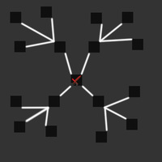

The Horrors of Nazarick is a roguelike dungeon crawler with more reliance on RNG.
The game is only availible for PC, but further development could yield a "mobile friendly" alternative.
In the world of Yggdrasil, there exists a tomb said to contain unknown relics that can fulfill one's wildest wishes. The only caviat is, there's no way out once one enters. Our protagonist in their greed-fueled charge into the tomb, drunk on the idea of becoming a living god.
After a short, skippable tutorial, the player is dropped into the Great Tomb of Nazarick's catacombs, the first floor. Although the game is designed to be fairly linear, there's no harm in including a tutorial the player can choose to ignore.
Developed by Jacob Nemeth, a second year Game Design and Development RIT student.